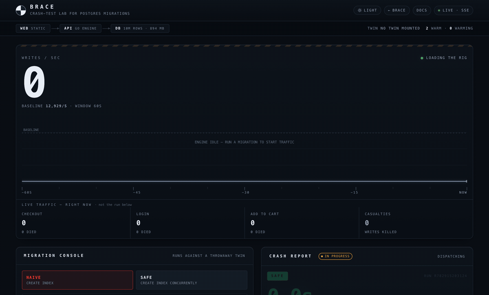
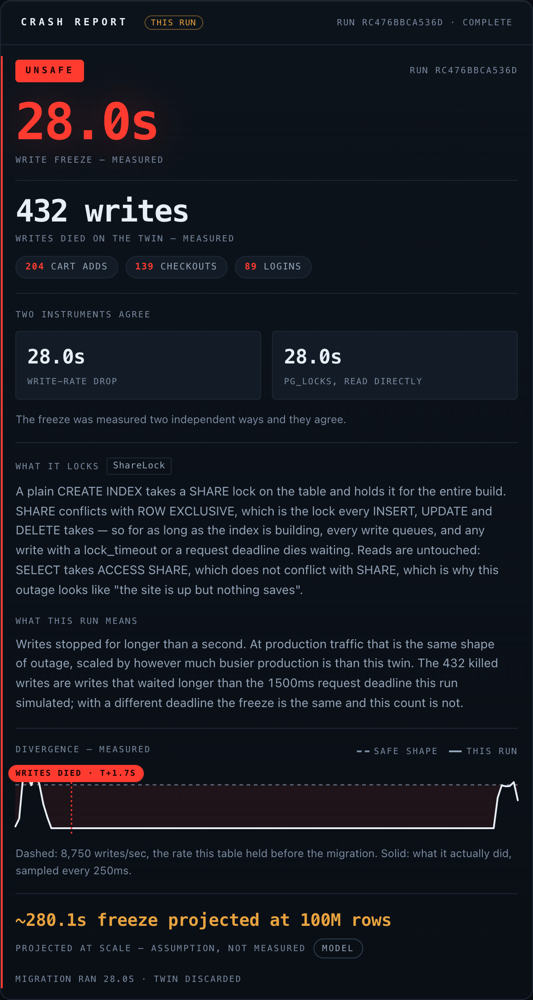

Manual · Brace · the crash-test lab for Postgres migrations
How Brace works.
Brace runs the migration you are nervous about against a full-scale copy of a database, under live write traffic, and counts how many writes it kills. This is the manual: the science under it, the three ways to run it, hostile mode, self-hosting against your own schema, the API — and exactly where the rehearsal stops matching reality.
What Brace is
A crash-test lab for database migrations.
In one line: Brace clones a database at production scale, fills it with live write traffic, then slams your migration into it — so the freeze happens to a crash-test dummy instead of to your users.
A schema change that looks harmless on an empty staging table can lock a live table for tens of seconds. During that lock, writes pile up; the ones that wait too long fail outright. Brace exists to show you that — as a measured number of dead writes on a throwaway copy — before the same statement touches production.

CREATE INDEX: writes crater to zero on a throwaway twin while the casualty count climbs.The whole idea is the same end state, two fates. The same index — orders (customer_id) — can be built two ways. Both leave an identical index behind, yet one is safe to run against a live table and the other is an outage:
-- takes a SHARE lock and holds it for the whole build — every write queues behind it
CREATE INDEX idx_orders_customer_id ON orders (customer_id);
On Brace's 10-million-row twin, under live checkout / login / cart traffic, that holds its SHARE lock for the entire build: 28.0 seconds of frozen writes and 432 writes killed at the lock_timeout — real 55P03 errors, not a simulation of them. (Magnitude varies with load, roughly 7.5–28s and 144–432 killed; the verdict is the finding, the decimal is not.)
-- SHARE UPDATE EXCLUSIVE — builds the same index without ever blocking writers
CREATE INDEX CONCURRENTLY idx_orders_customer_id ON orders (customer_id);
Same index, same twin, same traffic: 0.00 seconds frozen, 0 writes dead. Both are single statements the lab runs and measures end to end, so the contrast is counted, not asserted. Brace does not read your SQL and guess; it runs your SQL and counts the bodies.
A run is one statement or an ordered sequence. A real migration is usually a script — add a column, then index it; add a NOT VALID constraint, then VALIDATE it. Pass statements: [ … ] and Brace runs them in order on one twin, so a later step sees the schema the earlier steps produced (a CREATE INDEX on a column the sequence just added would ERROR as two separate runs, because each single run gets a fresh clone). It reports a per-statement verdict plus the worst-of overall — so a deploy gate blocks if any step would freeze writes, and you see exactly which step is the killer. Up to 10 steps — in the web lab (the "run a multi-step migration" panel), or via the MCP and API.
Deploy your own
Stand up your own Brace, or use the public lab.
Brace needs a real Postgres superuser — to create and drop twin databases every run — and native CREATE DATABASE … TEMPLATE cloning. Both are rare on managed Postgres and native to Zerops. One import.yml stands up all four services.
zcli project project-import ./import.yml # db · api · web · mcp zcli push --serviceId <api-id> # setup: api — builds cmd/brace zcli push --serviceId <web-id> --setup web --workingDir ./web zcli push --serviceId <mcp-id> --setup mcp # the hosted MCP endpoint (optional)
That is it: db (postgresql@16, dedicated 2–3 vCPU, NON_HA), api (go@1), web (static), and mcp (python@3.12, the hosted MCP endpoint), wired by zerops.yml and import.yml. The api seeds its own 10M-row template on first boot; /healthz answers immediately, and /api/* reports {"error":"starting"} until the template is warm. The mcp service is optional — the lab, CLI and local MCP work without it.
Prefer to try it before you deploy? The public lab needs no account and no login — paste a migration and watch it crash. Everything on this page is measured there.
The science
Why a lock freezes writes — and how Brace measures it.
Picture a busy shop with one checkout lane open. To restock a shelf, a clerk closes that lane and stands in front of it. Every shopper with a full cart just waits — they can't pay. Wait long enough and some of them give up, abandon the cart, and walk out.
A locking migration does exactly that to a database table: while it changes the table, every write to that table queues behind it. Writes that wait past their timeout don't merely slow down — they fail and roll back. Those abandoned carts are your users' failed checkouts, logins and orders. Brace's job is to count them before it's your real shop.
How a rehearsal runs
One run is a fixed pipeline. Every stage happens on the disposable twin, and the whole thing takes about ten seconds:
Not every lock is the same lock
Postgres has a ladder of lock strengths. What a statement freezes depends on which rung it grabs:
-
SHARETaken by a plain
CREATE INDEX. Blocks writes (INSERT / UPDATE / DELETE). Reads still work.conflicts with ROW EXCLUSIVE
-
ACCESS EXCLUSIVETaken by an
ALTER TABLEthat rewrites the table. Blocks everything — reads included.the strongest lock
-
SHARE UPDATE EXCLUSIVETaken by
CREATE INDEX CONCURRENTLY,VACUUM. Blocks nothing. Writers and readers keep going.the safe path
A blocked write doesn't wait forever. Every write in the load generator runs under a lock_timeout of 1.5 seconds; a write that waits longer is cancelled by Postgres with SQLSTATE 55P03 (lock_not_available) and rolled back. That is a casualty — a write a real user issued that actually died.
Why writes die but reads don't
A plain CREATE INDEX takes SHARE, which conflicts with the ROW EXCLUSIVE lock every INSERT, UPDATE and DELETE needs — so every write queues. But SELECT only takes ACCESS SHARE, which does not conflict, so reads sail through. That is why this outage looks like "the site is up but nothing saves."
Measured two independent ways
Brace watches the freeze with two separate instruments and expects them to agree:
- Write-rate collapse — the load generator's throughput falling toward zero writes per second the moment the lock lands.
- The catalog itself —
pg_stat_activityandpg_locks, sampled directly every 250 ms during the run, showing the blocking lock held and the writers queued behind it.
A casualty is counted only for a genuine 55P03 lock timeout — never inferred from a slow response, a cancellation (57014), or a deadlock (40P01). The report then translates the raw count into user terms: not "432 writes rolled back" but 432 denied checkouts, logins and cart-adds, broken out by label.

What that looks like across common migrations
One run, 10M-row twin, several thousand writes/sec baseline, on the hardware Brace was measured on (dedicated 2–3 vCPU, PostgreSQL 16):
| Migration | Verdict | Freeze | Writes killed |
|---|---|---|---|
ADD COLUMN … NOT NULL DEFAULT random() | unsafe | 31.0s | 480 |
ADD COLUMN z serial (looks harmless — isn't) | unsafe | 26.2s | 408 |
ALTER COLUMN … TYPE … | unsafe | 20.5s | 312 |
CREATE INDEX (naive) | unsafe | 7.5–28.0s | 144–432 |
REINDEX INDEX | unsafe | 11.0s | 168 |
CREATE INDEX CONCURRENTLY | safe | 0.00s | 0 |
VACUUM ANALYZE | safe | 0s | 0 |
Notice ADD COLUMN z serial: it looks like the harmless case and passes most linters, yet it holds the same table-rewrite lock as the obviously-dangerous DEFAULT random() version. That is the gap a rehearsal closes and a static rule can't.
Hostile mode
Measuring the freeze a fast statement would cause.
The problem it solves: some dangerous statements are dangerous only under contention. On an idle twin, a statement like ALTER TABLE … ADD COLUMN (with no default) acquires its ACCESS EXCLUSIVE lock instantly, does its work in milliseconds, and reports zero casualties. In production, that same statement has to wait for the lock — behind whatever transaction is already touching the table — and while it waits, every other write waits behind it.
Hostile mode holds a transaction open on the twin so the migration's lock acquisition has to queue, exactly as it would in production. The freeze that would otherwise be assumed is now measured:
| Hostile mode | Verdict for ADD COLUMN foo int | Why |
|---|---|---|
| off | safe · 0.0s, qualifier acquisition_not_simulated | Instant in isolation — the wait was never tested, so Brace refuses to call it an unqualified green light. |
| on | unsafe · ~2s frozen, measured | It queued behind the held transaction, and every write queued behind it. |
This is the real-world lock-acquisition cascade — the outage pattern nobody else reproduces — turned into a measured number instead of a footnote. Set it per run (hostile: true) or globally (BRACE_HOSTILE).
Hostile mode can't invent a freeze either. If the migration's lock never actually conflicts with the held transaction — say ALTER INDEX … RENAME, which takes only SHARE UPDATE EXCLUSIVE and blocks nothing — the run reports contention_not_engaged rather than claiming a freeze it didn't cause. Turn it on for fast DDL whose real risk is the wait for the lock; leave it off for statements that already do heavy work under the lock.
Scale projection
The twin is a sample of your database, not your database.
The key fact: whether a statement takes a blocking lock does not depend on table size — but how long it holds that lock does, because the work under the lock (a rewrite, a full index build) scales with row count. So a 10M-row twin can measure a freeze too short to call unsafe, while the same statement against a 500M-row production table would be an outage.
Brace's answer is a projection, not a bigger twin. Tell it your real row count — BRACE_TARGET_ROWS in the web lab, -target-rows on brace-check, or target_rows over MCP — and it projects the measured freeze onto that count. A CREATE INDEX measured at 7.5s on 10M rows projects to 375s at 500M rows — still unsafe, and worse than the raw measurement let on.
The verdict then follows effective_verdict: measured or projected, whichever is worse. Two rules keep it honest:
- A projection can escalate a verdict — safe on the twin can become unsafe for your real table. That is what stops a small-twin measurement from reading as a false green light.
- A projection can never soften one. A measured unsafe stays unsafe no matter what row count you supply.
The projection is a linear model, not a second measurement. It is clearly labelled as an assumption everywhere it appears, because it has not been validated across arbitrary index types, fill factors, or hardware — and it will be wrong in ways a real crash test at your actual scale would not be.
Using it
Three ways to run a rehearsal.
The same engine answers the same question — "will this migration hurt?" — whether a human, a CI pipeline, or an AI agent is asking.
-
01
Web lab
Paste a migration or pick a preset and watch it crash live. No account.
lab.html -
02
CLI deploy-gate
An exit code that blocks the merge when a migration is unsafe.
brace-check· CI -
03
MCP verb
A coding agent asks "will this hurt?" before it ships a schema change.
mcp/server.py
The web lab
Paste a migration, or pick a preset, and watch it crash. The write-rate chart collapses live as the lock lands, and a report card lands the moment the twin stops moving: freeze duration, casualties by label, the exact lock mode taken, and — on an unsafe verdict — a safe rewrite that has already been rehearsed, not just recommended. No account, no login.
Using it · CI
The brace-check deploy-gate.
Rehearse a migration inside your pipeline and let the exit code block the merge. brace-check exits non-zero when a migration is unsafe, so a dangerous statement can't reach the default branch. The exit code is a strict contract:
brace-check -f migration.sql # 0 → SAFE — merge it # 1 → UNSAFE — froze writes > 1s OR real writes died; block the deploy # 2 → rejected / errored / inconclusive — no clean verdict # project the measured freeze onto your real table size: brace-check -target-rows 500000000 -f migration.sql
The exit code follows effective_verdict — measured or projected, whichever is worse — so a statement that was borderline on the 10M-row twin fails the gate once you tell it the table is 50× bigger. Run a linter on every commit; run this before the migration touches production.
Using it · agents
The MCP verb an agent calls.
A local AI assistant — Claude Code, Cursor, or any MCP client — can call Brace directly. An agent that writes a migration in seconds should be able to ask "will this hurt?" in the same breath, against a real production-scale rehearsal rather than a linter's guess. Run mcp/server.py (FastMCP, over stdio) and it exposes three tools: check_migration to rehearse a statement, get_result to fetch a rehearsal too slow to finish inline, and lab_status to read the warm-twin pool.
check_migration(sql, target_rows=0, hostile=false, statements=[],
deadline_ms=0, schema_ddl="", row_count=0, wait_seconds=45)
# returns JSON the agent can branch on:
# effective_verdict → gate on THIS: worst-of measured + projected
# verdict → what was measured on the twin alone
# blocked_seconds → how long writes froze
# casualties → real writes killed, broken out by label
# statements → per-step results, when you passed a sequence
# suggestion → the safe rewrite, on an UNSAFE verdict
# qualifier / note → what this run did NOT establish, in words
# contention → whether hostile mode's hold actually engaged
# — so the agent can refuse to ship a locking migration.
It returns the same verdict, casualties and suggested rewrite the web lab shows — as JSON — so a coding agent can gate its own output the way CI gates a human's. Always branch on effective_verdict, never on verdict: verdict is only what the twin measured, while effective_verdict also folds in the projection onto your real target_rows, so a change can read SAFE on the twin and UNSAFE at your scale.
A whole migration script, not one statement
Real migrations are files, not single statements. Pass statements — an ordered list — and Brace runs them in order on one twin, so a later step sees the schema the earlier steps produced. Every step passes the same allow-list a single run does (a sequence can't smuggle a non-allow-listed verb), it is capped at 10 steps, and the top-level verdict/effective_verdict are the worst-of — so gating on effective_verdict blocks the deploy if any step would freeze writes.
check_migration(statements=[ "ALTER TABLE orders ADD COLUMN promo int", "CREATE INDEX idx_orders_promo ON orders (promo)" # depends on step 1 ]) # → verdict: "UNSAFE" (worst-of; the CREATE INDEX froze writes) # → statements: [ # { index:0, verdict:"SAFE", blocked_seconds:0, … }, # { index:1, verdict:"UNSAFE", blocked_seconds:27.8, casualties:{…} } ] # each step measured in its own window — you see WHICH step is the killer.
A step that is SAFE only because nothing was holding the table — a metadata-only ACCESS EXCLUSIVE shape that got its lock instantly — still carries qualifier: "acquisition_not_simulated" in its per-statement result, exactly as a single run would. hostile can't combine with statements (a sequence can't hold one contended lock across the whole script); to measure a step's acquisition wait, run that one statement on its own with hostile=true.
Match your application's real deadline
A "casualty" is a write that waited longer than a deadline and was killed — so the count depends on which deadline. Pass deadline_ms to set it to your application's real per-request lock timeout (the wait after which your own client gives up), and casualties.deadline_ms comes back reflecting your environment rather than the lab default. The freeze duration is the same regardless; only who survives it changes.
Slow migrations: PENDING, then get_result
A real migration can outlive the client's tool timeout. CREATE INDEX CONCURRENTLY, table rewrites and ALTER COLUMN … TYPE routinely run 40–90 seconds, longer than the ~60 s budget most MCP clients allow. So check_migration never holds the call open past its wait_seconds (default 45): when the rehearsal is still running at the deadline it returns a recoverable status rather than losing the run —
result = check_migration(sql) # slow run still going at the deadline: # { "verdict": "PENDING", "run_id": "…", "next": "call get_result(run_id) …" } # the run is NOT lost — poll for the finished verdict with its run_id: result = get_result(run_id) # returns the SAME rich shape check_migration returns — # effective_verdict, blocked_seconds, casualties, suggestion, … — # or PENDING again if it is still in flight (poll once more).
This is the answer to "how do I test a slow migration?": on PENDING, call get_result(run_id) a few seconds later. Runs are serialised, so the run you just submitted is the one the lab is holding as its most-recent result — poll promptly, because a newer run supersedes the rich result it can hand back.
The verdict enum a strict gate can see
Every value check_migration and get_result can put in the top-level verdict / effective_verdict / status fields, so an agent author knows exactly what to branch on and is never surprised by an undocumented one. Nothing here is a raw HTTP error — the server maps each one to a named, typed status.
| Status | Meaning · what to do |
|---|---|
SAFE | Writes kept flowing; safe at the tested size. Still read effective_verdict — the projection can escalate it. |
UNSAFE | Writes froze >1 s and/or real writes died. Block the deploy; the safe rewrite is in suggestion. |
INCONCLUSIVE | Aborted before it could finish (e.g. never acquired its lock in budget). Not a pass. |
ERRORED | The statement could not execute at all (bad SQL, permission denied, a run that failed before measurement). Never safe. |
SAFE · statically_safe | The already_safe fast path: a catalog-only shape (ADD COLUMN with a constant default, ANALYZE, COMMENT) proven safe by shape without a run. If it still takes ACCESS EXCLUSIVE it carries qualifier: "acquisition_not_simulated" — its acquisition wait was not simulated; re-run with hostile=true. |
REJECTED | The lab will not run this input (not a migration, more than one statement crammed into a single sql field — use statements: [ … ] for a sequence — too long, or a target relation that does not exist). See reason / suggestion. Treat as not-safe. |
RATE_LIMITED | Too many runs — a graceful 429, never a raw HTTP error. Retry after retry_after_seconds. |
BUSY | Another crash test is in progress; retry shortly. |
WARMING | No warm twin yet; retry after the ETA in reason. |
PENDING | The run did not finish within wait_seconds but was not lost. Carries run_id; call get_result(run_id). |
The four measured/derived outcomes (SAFE, UNSAFE, INCONCLUSIVE, ERRORED) can appear in both effective_verdict and verdict; the submission and transport statuses (REJECTED, RATE_LIMITED, BUSY, WARMING, PENDING) are never a measurement and appear in verdict only. A gate that treats everything except a clean SAFE as "do not ship" is correct.
A statement against a table the lab doesn't have
The public lab carries one synthetic table — orders. A statement whose target relation isn't there is not blessed SAFE: a metadata-only shape that would otherwise fast-path to a clean pass comes back REJECTED instead, naming the missing relation and listing the tables the lab actually has —
check_migration("ALTER TABLE users ADD COLUMN verified boolean")
{ "verdict": "REJECTED",
"reason": "Relation \"users\" does not exist in the lab … The lab's tables are: orders.",
"suggestion": "Target one of the lab's tables: orders." }
That is exactly why rehearsing your schema means self-hosting: point BRACE_API at your own instance, restore your dump as the template, and the same tools now crash-test against your tables. See Bring your own data.
Connect it to your agent
The fastest path needs nothing installed — Brace runs a hosted MCP endpoint on Zerops. Any MCP-capable agent (Claude Code, Cursor, Windsurf, Cline, Codex) connects by URL:
claude mcp add --transport http brace https://mcp-2a61-8080.prg1.zerops.app/mcp
Agents that speak only stdio (e.g. some Codex/Cursor setups) reach the same hosted endpoint through the mcp-remote bridge — for Codex, in ~/.codex/config.toml:
# Codex — ~/.codex/config.toml
[mcp_servers.brace]
command = "npx"
args = ["-y", "mcp-remote", "https://mcp-2a61-8080.prg1.zerops.app/mcp"]
Or run it locally against your own database — clone the repo and point it at your Postgres (this is how you rehearse your data; see Bring your own data):
python3 -m venv mcp/.venv && mcp/.venv/bin/pip install -r mcp/requirements.txt
claude mcp add brace -- "$PWD/mcp/.venv/bin/python" "$PWD/mcp/server.py"
# BRACE_API defaults to the public lab; set it to your own instance to use your data
Every transport exposes the same three tools — check_migration, get_result and lab_status — so an agent gets the async slow-migration recovery path above whether it connects by URL, through the mcp-remote bridge, or over local stdio.
Then just ask your agent: "use brace to check CREATE INDEX idx_orders_email ON orders (email) before I ship it — with hostile mode on." It runs a real rehearsal and refuses to ship an outage.
Bring your own data · self-host
Rehearse against your schema, not ours.
The public lab crashes every migration into one shared, synthetic 10M-row orders table — a good demo and a weak rehearsal. The migration you are actually afraid of meets your indexes, your row widths and your traffic. A self-hosted Brace points at a restored production dump instead, with two environment variables and no code changes. This is a first-class capability, not a footnote.
Suppose the database you are actually afraid of is a billing system: accounts, invoices, sessions — real production types, not toy integers. A uuid primary key, a jsonb line-items blob, a numeric(12,2) amount, an inet last-login address, a text[] of tags. Roughly 1.2M rows of invoices. You point a self-hosted Brace at a restored dump of it and rehearse the exact index you were about to add in production.
-- your restored production dump, loaded as brace_template CREATE TABLE invoices ( id uuid PRIMARY KEY DEFAULT gen_random_uuid(), account_id uuid NOT NULL, amount_cents numeric(12,2) NOT NULL, line_items jsonb NOT NULL DEFAULT '[]', tags text[], last_ip inet, created_at timestamptz NOT NULL DEFAULT now() ); -- ~1.2M rows; accounts + sessions alongside
Two variables switch Brace off the synthetic seed and onto your own tables and traffic — nothing else changes:
BRACE_SEED: "off" # use the restored template as-is; never seed BRACE_LOAD_LABELS: >- # describe your real write mix checkout:3:INSERT INTO invoices (account_id, amount_cents) VALUES (gen_random_uuid(), $1 % 90000 + $2 * 0); touch:2:UPDATE sessions SET last_seen = now() WHERE id = $1 % 50 AND $2 > 0
Now rehearse the naive index you were about to ship — a plain CREATE INDEX on invoices (account_id). On your 1.2M-row twin, under your own checkout and touch traffic, it holds its SHARE lock and freezes writes; then the scale projection warns what the same statement does to the full table:
CREATE INDEX idx_invoices_account ON invoices (account_id); verdict = UNSAFE blocked = 4.2s (measured, on 1.2M rows) casualties = 63 by_label=map[checkout:58 touch:5] effective_verdict = UNSAFE projected 18s at 100M rows
Your schema, your row widths, your traffic — the migration you are actually afraid of, measured on a throwaway copy of it. The numbers here are representative of a self-hosted run against a foreign schema, not a claim about the shared public lab.
Stand it up
One import.yml stands up all four services on your own Zerops project — web (static), api (Go engine), mcp (the MCP endpoint), and db (PostgreSQL 16). Brace needs a Postgres it owns: it creates and drops databases on every run, so don't point it at a server anything else depends on.
Restore your dump as the template
Every disposable twin is cloned from a database named brace_template — the name is fixed, because the twin pool, the orphan sweep and the boot check all agree on it.
createdb -U <superuser> brace_template pg_restore -U <superuser> -d brace_template your-dump.dump
Every warm twin is a full physical copy of the template, so trim it before you restore if you can — roughly 80 seconds of clone time per gigabyte. Only the tables named by your migration and your load statements have to be realistic.
Turn seeding off and describe your traffic
Set BRACE_SEED=off so Brace uses the restored template as-is instead of appending synthetic rows, and describe your write mix with BRACE_LOAD_LABELS: semicolon-separated name:weight:statement triples.
- name — non-empty, no whitespace, unique. It becomes a key in
casualties.by_labeland a series on the dashboard. - weight — an integer > 0; the relative share of write traffic.
- statement — one statement that must bind both
$1and$2and nothing higher. Every write binds exactly two bigints, and Postgres rejects a statement that declares fewer. If your second value is genuinely unused, give it a harmless home:… WHERE id = $1 AND $2 > 0.
At boot, Brace clones a twin and runs each label statement against it exactly once. A typo'd table name fails startup with the label name, the SQLSTATE and the statement — because a config that boots but never lands a write would report zero casualties, and zero casualties would look exactly like good news.
The privilege model
Brace has exactly one security boundary, and it is worth knowing where it sits before you hand it a production schema. Two unprivileged roles, each with a fresh random password generated at every process start:
brace_migratorruns the migration under test. It isLOGIN NOSUPERUSER NOCREATEDB NOCREATEROLE NOREPLICATION NOBYPASSRLS, owning nothing outside the disposable twin. Postgres itself — not application code — refusesCOPY … FROM PROGRAM, server-side file reads andDROP DATABASEfor that role.brace_trafficruns your load statements, with the least privilege the writes need and nothing more:SELECT, INSERT, UPDATEon existing public tables, neverDELETE,TRUNCATE,CREATEor ownership. A CHECK constraint or column default is evaluated as the session that writes the row, so running traffic unprivileged is what stops a smuggled expression from firing as superuser.
Brace runs inside your own infrastructure and the restored template is never written to — with BRACE_SEED=off, boot only reads its catalog, and every run gets a fresh twin that is dropped when the run ends. Your data never leaves your infrastructure.
API reference
The public HTTP surface.
Everything the web lab shows is available over plain HTTP — the CLI and the MCP verb are thin clients over these same endpoints.
Rehearse one migration — or a whole script. Body: { sql, mode?, target_rows?, hostile?, lock_timeout_ms?, statements?, schema_ddl?, row_count? }. Pass statements: [ … ] (an ordered array, ≤10) instead of sql to run a sequence on one twin; pass schema_ddl (one CREATE TABLE, with an optional row_count) to rehearse against your own table shape — the public lab builds an isolated throwaway table from it and seeds it with synthetic rows, no self-host required (distinct from bringing your own data, which needs self-hosting); lock_timeout_ms sets the per-request deadline a casualty is counted against. A run takes about ten seconds, so the call does not hold the request open: it returns 202 { run_id } on admission, then the completed report card is read back from GET /api/stats as last_run and pushed live over the SSE stream. Everything else is a typed rejection with a reason — no raw or unexplained errors (see the status map below). A statement whose target relation does not exist is rejected, never blessed SAFE; hostile combined with statements is rejected too.
The current live frame — writes/sec, casualties, the running twin — plus last_run, the most recent completed report card (verdict, effective verdict, freeze, casualties by label, lock modes, any scale projection, and on unsafe a suggested rewrite).
A Server-Sent Events feed of the same stats frames — this is what drives the live write-rate chart in the web lab.
Engine and template state: whether a run is in progress, the warm-twin pool, and the loaded template's row count and size. Answers {"error":"starting"} until the template is warm.
The recent run ledger, newest first — an array of past report cards (optional ?limit=).
A single run's full report card by id — the same shape as one row of /api/history.
Liveness probe. Returns ok the moment the listener is up — deliberately dumber than readiness, so a platform can't kill the container mid-seed.
How POST /api/run answers
The MCP verb and the CLI are thin clients over this endpoint, and each status below is the HTTP form of a value in the verdict enum. Every 4xx carries a JSON reason; a rate-limit is a graceful 429 with Retry-After, never a raw error:
| HTTP | Body | Maps to |
|---|---|---|
| 202 | { run_id } — admitted; read the result from /api/stats | SAFE / UNSAFE / … |
| 400 | { error:"rejected", kind:"already_safe", reason } — proven safe by shape, no run | SAFE · statically_safe |
| 400 | { error:"rejected", kind:"rejected", reason, suggestion? } — not a migration, multiple statements in one sql field (use statements[]), too long, or a nonexistent target relation | REJECTED |
| 413 | { error:"rejected", reason } — body over the size cap | REJECTED |
| 429 | { error:"rate_limited" } + Retry-After header | RATE_LIMITED |
| 409 | { error:"run_in_progress" } | BUSY |
| 503 | { error:"no_warm_twin", eta_seconds } · { error:"starting" } | WARMING |
On a nonexistent relation the 400 rejected body names the missing relation and lists the lab's tables — the public lab has just orders, so DROP INDEX or an ALTER TABLE against your own users or invoices comes back rejected here. To crash-test against your schema, self-host and point BRACE_API at your instance.
Honesty · the fixes
What we got wrong — and fixed.
A tool that tells you a migration is safe has to be right, so the ways Brace was once wrong are worth naming. Each of these was a real bug caught before submission; each is fixed; each changed how the engine works today. They are here because a measurement tool earns trust by showing its scars, not by hiding them.
The load ran as superuser
What broke: the write traffic once ran as the database superuser. A migration is caller-supplied SQL, and a CHECK constraint or column DEFAULT is evaluated as the session that writes the row — so a smuggled expression could have called pg_read_file() as superuser. The fix: two least-privilege roles — brace_migrator and brace_traffic, both NOSUPERUSER NOCREATEDB — so the role, not a regex, is the boundary. The allow-list is now only UX and blast-radius hygiene; the privilege floor is what actually contains hostile SQL.
A migration could read SAFE when it wasn't
What broke: several shapes could earn a false green light — a DEFAULT using a volatile function that silently rewrites the table, a statement against a table the lab doesn't have (fast-pathed to SAFE), an O(rows) change that finished fast on a small twin. The fix: the monitor's observed lock mode is now the arbiter of whether a freeze is even possible; a nonexistent relation is REJECTED, never blessed; and the scale projection can escalate a twin-SAFE result to UNSAFE at your real row count. A SAFE now has to survive all three.
The dangerous half of a fast statement was invisible
What broke: a metadata-only ALTER TABLE … ADD COLUMN takes ACCESS EXCLUSIVE but gets it instantly on an idle twin — so it measured SAFE, hiding that in production it waits behind your longest open transaction while every query queues behind it. The fix: that verdict now carries the acquisition_not_simulated qualifier, and hostile mode holds a real transaction so the acquisition wait is measured, not assumed.
The projection once invented a freeze
What broke: an early scale model projected a phantom freeze onto shapes that don't block writes at all, turning a genuinely safe change red. The fix: the projection only ever escalates a measured SAFE to UNSAFE — it never manufactures a number for a non-write-blocking shape, and an ERRORED or INCONCLUSIVE run emits no projection at all. It is labelled an assumption everywhere it appears.
The platform proxy silently downgraded the MCP
What broke: the hosted endpoint's POST /mcp/ was rewritten to a 307 → GET /mcp by the platform proxy, which broke the streamable-HTTP handshake — the remote MCP looked dead through no fault of its own. The fix: an ASGI path-normalising wrapper serves both /mcp and /mcp/ directly, so an agent connects whether or not its client sends the trailing slash.
Every fix above made the engine say less — fewer confident greens, more honest qualifiers. A crash-test tool is only worth running if it would rather say "I didn't test that" than tell you a comfortable lie.
Honest limits
Where the rehearsal stops matching reality.
Brace is a rehearsal, not a guarantee. The trust mechanic is naming exactly where it stops being true.
Postgres only — on purpose
Brace commits to one database's truth. Its entire mechanism is Postgres-specific: the lock ladder (SHARE / ACCESS EXCLUSIVE / SHARE UPDATE EXCLUSIVE), lock_timeout and the 55P03 error, and reading contention straight out of pg_locks. Other engines lock differently and would need a different engine, not a config flag. Doing one database exactly right beats doing several approximately.
The twin is not your whole production system
A twin is a single Postgres database under a synthetic write mix. It does not model read replicas and replication lag, autovacuum pressure, or a cold cache — all of which shape how a migration actually behaves in production. It proves the mechanism (a blocking lock kills waiting writers); it does not reproduce your specific traffic shape, pooling, or retry logic.
The projection is a linear model
Scale projection multiplies a measured freeze by a row-count ratio. It has not been validated across arbitrary index types, fill factors, or hardware, and it is labelled an assumption wherever it appears — never a second measurement.
Sequences run; rollout coordination doesn't
Brace measures a single statement or an ordered multi-statement sequence on one twin (up to 10 steps), each step measured in its own window. What stays out of scope is the application-level coordination around a migration — dual writes, batched backfills, feature-flag cutover — and long transactional DDL blocks. Brace tells you what each DDL step does to live writes; it does not orchestrate the rollout around it.
The public lab is synthetic
Row values, timestamps and label statements in the stock seed are generated, not sampled from a real dataset, so planner behaviour can differ from a production table with real data skew even at the same row count. If that is what you're rehearsing, bring your own dump.
Two more honest edges
CREATE INDEX CONCURRENTLYis reported safe for write-freeze purposes because it doesn't take the blocking lock — measured, not assumed. What Brace does not simulate is aCONCURRENTLYbuild failing partway and leaving anINVALIDindex that needs a manual retry.- The measured numbers on this page reflect one run on one hardware profile. Absolute seconds will differ elsewhere; the relative ordering is the part expected to generalize.
The stack · and why
Every piece is boring on purpose.
Brace measures the truth about a database under load, so the stack's only job is to stay out of the way of that measurement. Nothing here is chosen to be fashionable — each piece is the one that lets Brace watch a real lock without a layer of abstraction lying about it.
mcp service — all over the private network. It owns the Postgres it clones twins from.Go for the engine — because one run is a concurrency problem
A single rehearsal runs three things at once against one twin: dozens of labelled write workers, a lock monitor sampling pg_locks every 250 ms, and the migration itself. That is a goroutine problem — cheap concurrency, precise cancellation, one static binary with no runtime to install. The engine talks to Postgres through pgx rather than the lowest-common-denominator driver, because it needs the real protocol: to read pg_stat_activity, to set lock_timeout per connection, and to run DDL in autocommit — which CREATE INDEX CONCURRENTLY requires.
Raw SQL, no ORM — because the SQL is the subject
Brace's entire job is to run your exact statement and watch what lock it takes. An ORM exists to hide SQL and locking behind objects — the precise thing being measured. So there is no ORM and no query builder: the migration is your string, the load is three hand-written statements, and the lock readings come straight from the catalog. The role a statement runs as is the security boundary, not a query layer.
A Postgres it owns, not a managed slice — because the feature set demands it
The twin mechanism needs three things managed Postgres almost always forbids: superuser (to create and drop databases every run), native CREATE DATABASE … TEMPLATE cloning, and direct reads of pg_locks. That is why Brace runs its own PostgreSQL 16 instead of pointing at a hosted database — and why Zerops, which hands you a Postgres you actually own, is the natural home.
FastMCP + Python for the agent endpoint — kept deliberately thin
The MCP server is FastMCP on Python, because the MCP client ecosystem is Python-first and FastMCP is its reference implementation. It holds no measurement logic: it shapes an agent's check_migration call into an HTTP request to the Go engine, maps every failure to a typed status, and gets out of the way. All the truth lives in one place — the engine — so the CLI, the web lab and the MCP can never disagree about a verdict.
A static frontend, no framework — because it is one stream
The dashboard is a single Server-Sent Events stream driving DOM updates. A front-end framework would add a build step and a bundle for a page that is, structurally, one EventSource and a chart. So it is vanilla HTML/CSS/JS with no build — and progressively enhanced: the docs and lab stay readable and navigable with JavaScript switched off entirely.
One measurement engine in Go, spoken to three ways — web, CLI, MCP — against a Postgres Brace owns. Every choice removes a layer that could stand between you and what the database actually did.
Architecture · Why Zerops
What Brace needs from its infrastructure — and how Zerops provides it.
The hard requirement: Brace needs a Postgres it is superuser on. It creates and drops databases on every single run and clones them with native CREATE DATABASE … TEMPLATE — and most managed Postgres offerings allow neither (no superuser, no arbitrary CREATE DATABASE, no TEMPLATE from a live db). Zerops gives you a real Postgres you own, not a locked-down slice — which is the one thing that makes the whole twin mechanism possible.
The four services
Brace is not one box; it is four Zerops services stood up from a single import.yml, each doing one job:
| Service | Runtime | Job |
|---|---|---|
api | Go (go@1) | The engine. Clones the twin, drives the labelled load, runs the migration, watches pg_locks, computes the verdict, streams SSE. |
web | static | The dashboard and this manual — plain HTML/CSS/JS, no build step, served straight off Zerops' static runtime. |
mcp | Python (python@3.12) | The hosted MCP endpoint (FastMCP over streamable HTTP). A thin client that turns an agent's check_migration call into an api request over the private network. |
db | PostgreSQL 16 | The lab's Postgres, on dedicated vCPU. Holds the seeded template and every throwaway twin. |
The private network is the security boundary
The services talk over Zerops' private network, and that is not a convenience — it is the security model. The db is never exposed publicly; the superuser DSN lives only inside the project and is never in git. The mcp service reaches the engine at http://api:8080 by service name, so the endpoint a stranger's agent connects to has no path to the database except through the same allow-listed, rate-limited engine a browser hits. The role boundary does the rest: your SQL runs as brace_migrator and load as brace_traffic, both NOSUPERUSER — see the self-host security notes.
Why the database has dedicated vCPU
This is the one place the $65 credit is deliberately spent, and it is load-bearing for the demo. The naive run wants high write load so the freeze is punchy; but CREATE INDEX CONCURRENTLY does two full heap scans, and on a shared core those scans starve the writers — the "safe" line sags under the very load that makes the naive line dramatic. Give db its own 2–3 vCPU and the concurrent build has a core the writers aren't fighting for: the naive run still craters and the safe run stays flat under the same load. The whole naive-vs-safe contrast — the money shot — depends on this.
The twin lifecycle Zerops makes cheap
Because Brace owns the Postgres, the twin mechanism is native and fast: a permanent brace_template (seeded, ALLOW_CONNECTIONS false so a stray connection can never block a clone) is copied with CREATE DATABASE … TEMPLATE in well under a second, kept in a small warm pool so a run starts instantly, and torn down with DROP DATABASE … WITH (FORCE) the moment it finishes. Orphaned twins from a crashed run are swept on startup. Every crash happens on a physical copy that is dropped when the run ends — nothing real is ever at risk.
What building on Zerops actually cost — honestly
Two real edges, because a stack page that only lists wins isn't a stack page:
- The platform proxy turned the MCP's
POST /mcp/into a307 → GET /mcpand broke the streamable-HTTP handshake. The fix is an ASGI path-normalising wrapper that serves both/mcpand/mcp/directly — so the remote endpoint works whether or not the client sends the trailing slash. - A service isn't reachable on its public subdomain until subdomain access is explicitly enabled (
zcli service enable-subdomain); the private-network name works immediately, the public URL needs that one extra step. Worth knowing before you go looking for a URL that isn't on yet.
Deploys are per-service and scriptable — zcli push --serviceId … --setup <name> — which is what made a fix→deploy→verify loop tight enough to iterate on all weekend. The one trap: the engine and the MCP are separate services, so an engine fix isn't live for agents until both api and mcp are redeployed.
None of this is proprietary. Brace is standard Go, static assets, Python and PostgreSQL 16 with no vendor APIs, so it runs anywhere those do — a single import.yml stands up all four services, which is exactly what makes bring-your-own-data a two-variable change instead of a fork. Zerops is where Brace is easy, not where it is locked in.
Bring your own migration.
Paste the one you are nervous about. It runs on a dummy, not on your users.